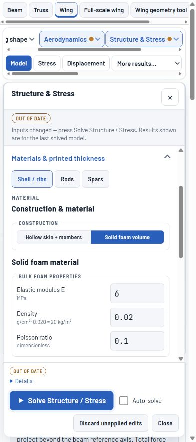

Release 0.5.0: independent numerical and analytical verification succeeded. This is not experimental validation, an ANSYS comparison, or flight/strength approval.
Each semi-span is 900 mm (full span 1800 mm). Imported Clark Y coordinates, constant chord 400 mm, zero sweep/dihedral, fully clamped roots. Speed 15 m/s, angle of attack zero, density 1.225 kg/m3. Self-weight off for matched pressure comparisons. All materials are illustrative.
| Construction | Semi-wing mass (g) | Tip z (mm) | Twist (deg) |
|---|---|---|---|
| Two spars + five ribs | 2065.1 | 1.3354 | -0.03090 |
| Two spars, no ribs | 1952.9 | 1.3354 | -0.03090 |
| Two bonded rods | 1874.6 | 1.4339 | -0.04266 |
| Two rods in sliding sleeves | 1874.6 | 1.4608 | -0.04287 |
PLA E 2000 MPa, density 1240 kg/m3, skin 1.2 mm. Two full-length I-spars at x/c 0.25 and 0.65: cap width 12 mm, cap/web thickness 1.2 mm. Five ribs are 1.6 mm thick at 150, 300, 450, 600 and 750 mm. Carbon rods are 4 mm diameter, E 25000 MPa and G 3000 MPa, at the same chord positions. Printed sleeves have 0.25 mm radial clearance. All four cases pass the one-way coupling screen at 15 m/s.
Equal spar-case deflection does not mean ribs are unnecessary. This global beam includes rib mass but no diaphragm stiffness, section distortion or local skin buckling. With self-weight off, the additional 112.16 g of ribs does not change the global pressure bending. Local rib/skin assessment requires a shell/solid model or a physical test.
| Construction | Semi-wing mass (g) | Tip z (mm) | Incidence (deg) | Full lift (N) | CL |
|---|---|---|---|---|---|
| Solid EPS + two bonded rods | 265.3 | 58.706 | -1.5238 | 18.995 | 0.1914 |
| Solid EPS + two bonded spars | 389.8 | 10.020 | -1.4259 | 19.224 | 0.1937 |
These are converged finite-rotation Reissner solutions with pressure recomputed on the deformed wing and transverse shear included. They differ from the fixed-pressure calculation above. Solid EPS: E 6 MPa, nu 0.10, density 20 kg/m3. No fabric or printed skin. Inserts are perfectly bonded and replace displaced foam volume; dimensions match the rods/spars above. Both cases pass all 18 numerical admission checks. The one-percent strain screen is a model-range screen, not measured foam strength.
The foam+spars case failed the former omitted-shear estimate (1.596% against 1%). The limit was retained and transverse shear was added to the model. Included-shear compliance refinement is 0.2970% for foam+rods and 0.0583% for foam+spars. Twist reduces lift relative to the rigid-wing value.
Numerical admission is separate from a deflection requirement. The import cases set an illustrative tip limit of 45 mm (5% of 900 mm), not a universal aircraft allowable. Foam+rods bends 58.706 mm and therefore fails that chosen design limit even though its nonlinear solution is numerically admitted. Foam+spars at 10.020 mm passes that deflection limit. The five-percent small-displacement screen is also 45 mm here, but the finite-rotation solver can solve beyond that screen; it does not waive a design requirement. A flight-specific deflection limit still needs a design basis.
The common rigid-wing Fine eight-mesh pressure sequence gives CL 0.255562, Cm about quarter MAC -0.076978, CDi 0.004786 and CL/CDi 53.4. Full-wing lift at 15 m/s is 25.358 N. Pressure drag 0.004773 is another estimate of the same induced drag: do not add them. Viscous/profile drag and stall are not computed. One common pressure solution is reused because the outer geometry is identical.
All four hollow configurations fail the one-way coupling screen at 50 m/s. This warns that rigid-wing pressure is inconsistent with the flexible shape; it is not a universal span/speed limit or material failure. The two-spar/five-rib wing was additionally solved with full two-way finite rotations at 50 m/s: tip z 13.8105 mm, incidence -0.35449 degrees, full lift 265.552 N, all 16 numerical checks passed. No aircraft weight or trim target was supplied; these are load cases, not verified flight conditions.
Verified coupled physics CI: seven successful jobs. Final 28-case mesh refinement and full solver CI: seven successful jobs. Machine-readable review. Raw accepted solutions and SHA256 provenance are included in the kit.
Download validation kit. All six native JSON files round-trip through the project importer. They contain the matched rigid-wing pressure at 15 m/s; this is not a saved converged flexible result. Use Flexible-wing results for the shear-inclusive coupled foam calculation.
Actual browser import of the foam+spars case was checked. This screenshot shows imported inputs, not a solved displacement field.

Foam support currently requires a straight constant-chord single body and full-length perfectly bonded rods or spars. Foam crushing, debonding, sliding foam-channel contact and fabric skins are not validated. The section shear law uses the Poisson-zero approximation. No local skin/rib buckling, section distortion, material nonlinearity, divergence, flutter or experimental validation is claimed. ANSYS comparison requires matched geometry, material laws, connections, boundary conditions and geometric-nonlinearity settings.